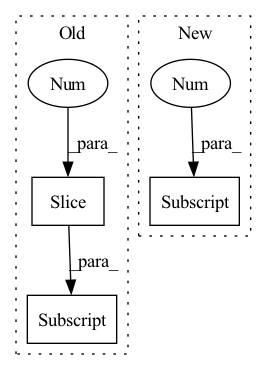

Pattern ID :2260
Before Change
inters.append(conv(out)) // P6td = conv(P6in + resize(P7td))
// bottom-up
inters = inters[::-1] // feature maps from bottom to top, same order as input x
outputs = [inters[0]]
for i, conv in enumerate(self.output_convs):
out = F.interpolate(outputs[-1], scale_factor=0.5, mode="nearest") // resize(P3td)After Change
outs[0] = tds[0]
for i in range(self.num_levels - 2):
outs[i+1] = self.out_fuses[i]([x[i+1], tds[i+1], self.downsample(tds[i])]) // P4in + P4td + resize(P3td)
outs[-1] = self.out_fuses[-1]([x[-1], self.downsample(tds[-2] )]) // P7in + resize(P6td)
return outs
In pattern: SUPERPATTERN
Frequency: 7
Non-data size: 3
Instances Fragment ID: 7913336
Project Name: gau-nernst/vision-toolbox
Commit Name: 0844b6bcb142e63b09cf6ae44e5087c20d52c380
Time: 2022-04-10
Author: gau.nernst@yahoo.com.sg
File Name: vision_toolbox/necks.py
M Class Name: BiFPNLayer
N Class Name: BiFPNLayer
M Method Name: forward(2)
N Method Name: forward(2)
M Parent Class: nn.Module
N Parent Class: nn.Module
M File Name: vision_toolbox/necks.py
N File Name: vision_toolbox/necks.py
M Start Line: 163
M End Line: 180
N Start Line: 160
N End Line: 172
Before Change
sim = einsum("b h i d, b h j d -> b h i j", q, k)
i, j = sim.shape[-2:]
mask_value = -torch.finfo(sim.dtype).max
if exists(context_mask):After Change
// take care of masking
i, j = q.shape[-2] , k.shape[-2]
mask_value = -torch.finfo(q.dtype).max
if exists(context_mask): Fragment ID: 7913322
Project Name: lucidrains/perceiver-ar-pytorch
Commit Name: be3765300f5aae03b779edf0e256b7a74bda5fc8
Time: 2022-06-21
Author: lucidrains@gmail.com
File Name: perceiver_ar_pytorch/perceiver_ar_pytorch.py
M Class Name: CausalPrefixAttention
N Class Name: CausalPrefixAttention
M Method Name: forward(5)
N Method Name: forward(5)
M Parent Class: nn.Module
N Parent Class: nn.Module
M File Name: perceiver_ar_pytorch/perceiver_ar_pytorch.py
N File Name: perceiver_ar_pytorch/perceiver_ar_pytorch.py
M Start Line: 130
M End Line: 159
N Start Line: 133
N End Line: 178
Before Change
last_state_list.append([h, c])
if not self.return_all_layers:
layer_output_list = layer_output_list[-1:]
last_state_list = last_state_list[-1:]
return layer_output_list, last_state_list
After Change
cur_layer_input = torch.unbind(input, dim=int(self.batch_first))
if not hidden_state:
hidden_state = self.get_init_states(cur_layer_input[0] .size(int(not self.batch_first)))
seq_len = len(cur_layer_input)
Fragment ID: 7913339
Project Name: openclimatefix/metnet
Commit Name: 12d0ea12a39fb28fca3d382611857f23f060b5b6
Time: 2022-02-01
Author: jacob@bieker.tech
File Name: metnet/layers/ConvLSTM.py
M Class Name: ConvLSTM
N Class Name: ConvLSTM
M Method Name: forward(3)
N Method Name: forward(3)
M Parent Class: nn.Module
N Parent Class: nn.Module
M File Name: metnet/layers/ConvLSTM.py
N File Name: metnet/layers/ConvLSTM.py
M Start Line: 149
M End Line: 188
N Start Line: 160
N End Line: 182
Before Change
segmented_x = [list(torch.split(x, x.shape[2] // self.split_block, dim=2)) for x in X]
for x in segmented_x:
if len(x) > self.split_block:
x[-2] = torch.cat(x[-2:] , dim=2)
ret_segments = []
for i in range(self.split_block):After Change
// by default N=1, does not split
segment_shapes = [[x.shape[2] // self.split_block] * self.split_block for x in X]
for x, seg_shape in zip(X, segment_shapes):
seg_shape[-1] += x.shape[2] % self.split_block
segmented_x = [torch.split(x, seg_shape, dim=2) for x, seg_shape in zip(X, segment_shapes)]
// apply MSAF Fragment ID: 7913326
Project Name: anita-hu/msaf
Commit Name: c784fa99febfbf86ef8aa8f6fa708227a7251ab1
Time: 2020-12-30
Author: anitahu113@gmail.com
File Name: MSAF.py
M Class Name: MSAF
N Class Name: MSAF
M Method Name: forward(2)
N Method Name: forward(2)
M Parent Class: nn.Module
N Parent Class: nn.Module
M File Name: MSAF.py
N File Name: MSAF.py
M Start Line: 131
M End Line: 145
N Start Line: 133
N End Line: 139
Before Change
x = self.net[idx](x)
stacked.append(x)
output = torch.cat(stacked[1:] , dim=1)
return output
After Change
stacked = torch.cat(stacked, dim=2)
key = self.bands[-1] // "full"
x = self.net[key](input)
x = torch.cat([stacked, x], dim=1)
x = self.d2block(x) Fragment ID: 7913328
Project Name: tky823/dnn-based_source_separation
Commit Name: 628cce12054e3d56f6fd72af21cdb87a520f32ae
Time: 2021-03-12
Author: 40362510+tky823@users.noreply.github.com
File Name: src/models/d3net.py
M Class Name: D3Net
N Class Name: D3Net
M Method Name: forward(2)
N Method Name: forward(2)
M Parent Class: nn.Module
N Parent Class: nn.Module
M File Name: src/models/d3net.py
N File Name: src/models/d3net.py
M Start Line: 59
M End Line: 70
N Start Line: 45
N End Line: 59
Before Change
self.upsample = lambda img, size: F.interpolate(img, size=size, mode="bilinear", align_corners=True)
def forward(self, f3, f2, f1):
f1 = self.upsample(f1, f3.shape[-2:] )
f2 = self.upsample(f2, f3.shape[-2:])
f3 = torch.cat([f1, f2, f3], dim=1)
f3 = self.conv1(f3)After Change
self.upsample = lambda img, size: F.interpolate(img, size=size, mode="bilinear", align_corners=True)
def forward(self, fs): //f3 f4 f5 -> f3 f2 f1
fx = fs[0]
for i in range(1, len(fs)):
fs[i] = self.upsample(fs[i], fx.shape[-2:])
fx = torch.cat(fs[::-1], dim=1)
Fragment ID: 7913332
Project Name: plemeri/inspyrenet
Commit Name: 5831b91559b695ff69a4691bd4539a5a1a3c2d5e
Time: 2022-05-09
Author: taehoon1018@postech.ac.kr
File Name: lib/modules/decoder_module.py
M Class Name: PAA_d
N Class Name: PAA_d
M Method Name: forward(2)
N Method Name: forward(4)
M Parent Class: nn.Module
N Parent Class: nn.Module
M File Name: lib/modules/decoder_module.py
N File Name: lib/modules/decoder_module.py
M Start Line: 93
M End Line: 96
N Start Line: 94
N End Line: 97
Before Change
def forward(self, x: torch.Tensor, target: torch.Tensor) -> torch.Tensor:
if self.ignore_classes:
select = target != self.ignore_classes[0]
for c in self.ignore_classes[1:] :
select.logical_and_(target != c)
x = x[select]
target = target[select]After Change
def forward(self, x: torch.Tensor, target: torch.Tensor) -> torch.Tensor:
if self.ignore_classes:
sel = torch.tensor(
list(set(range(x.shape[-1] )) - set(self.ignore_classes)),
device=x.device,
)
x = x.index_select(-1, sel) Fragment ID: 7913335
Project Name: lukashedegaard/co3d
Commit Name: 60c2fd3f9afe20541513643329310c15418e0dc8
Time: 2022-01-26
Author: lh@eng.au.dk
File Name: losses/ce.py
M Class Name: LabelSmoothingCrossEntropy
N Class Name: LabelSmoothingCrossEntropy
M Method Name: forward(3)
N Method Name: forward(3)
M Parent Class: nn.Module
N Parent Class: nn.Module
M File Name: losses/ce.py
N File Name: losses/ce.py
M Start Line: 58
M End Line: 62
N Start Line: 60
N End Line: 65